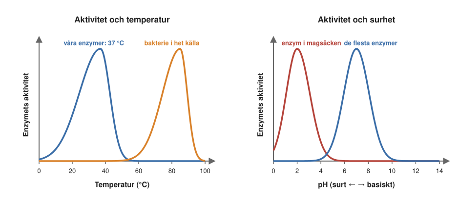
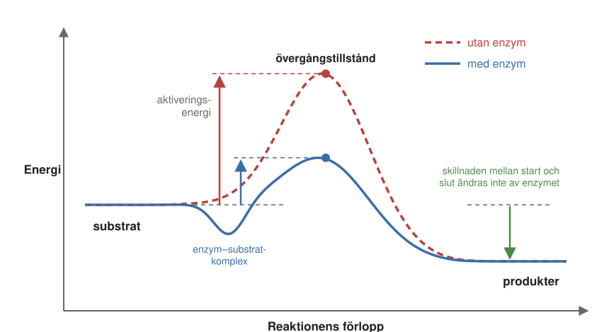
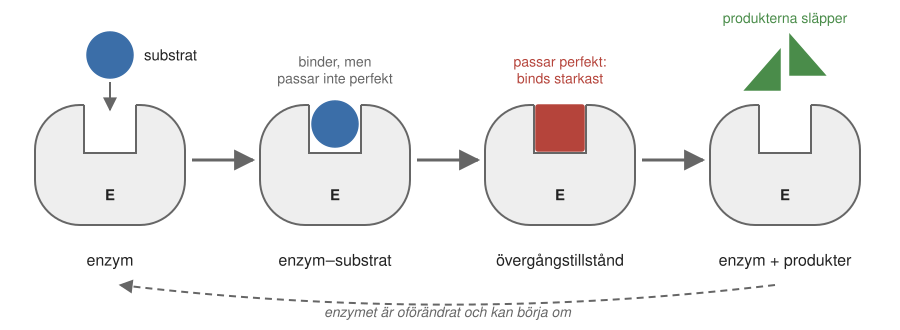
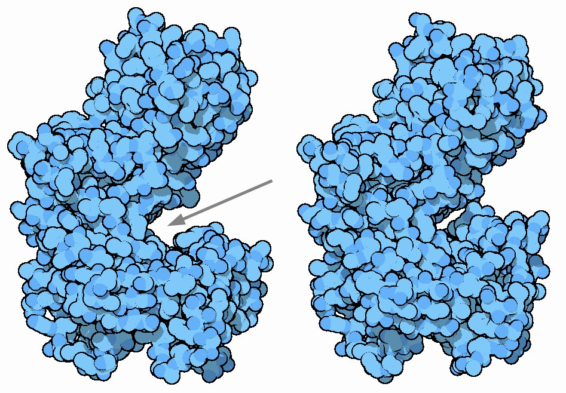
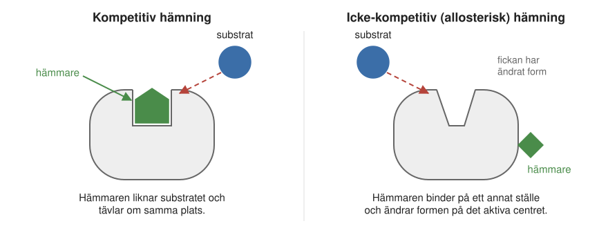
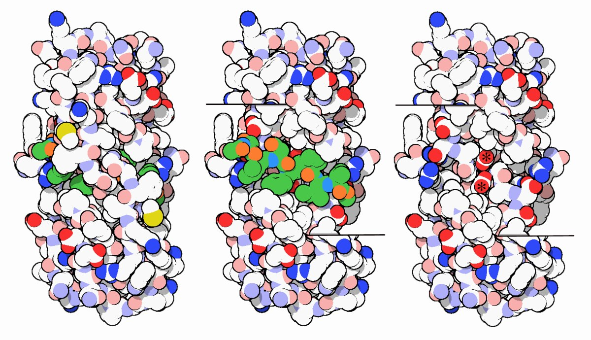
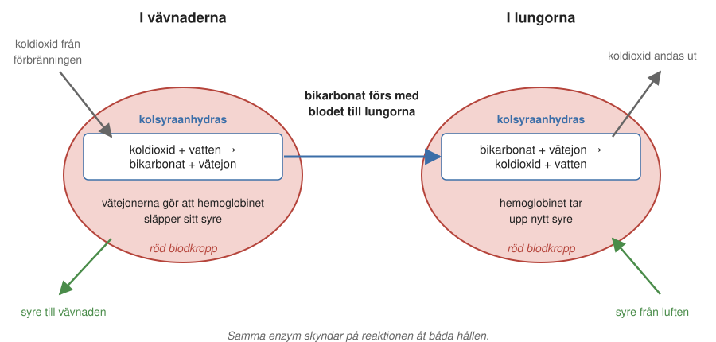
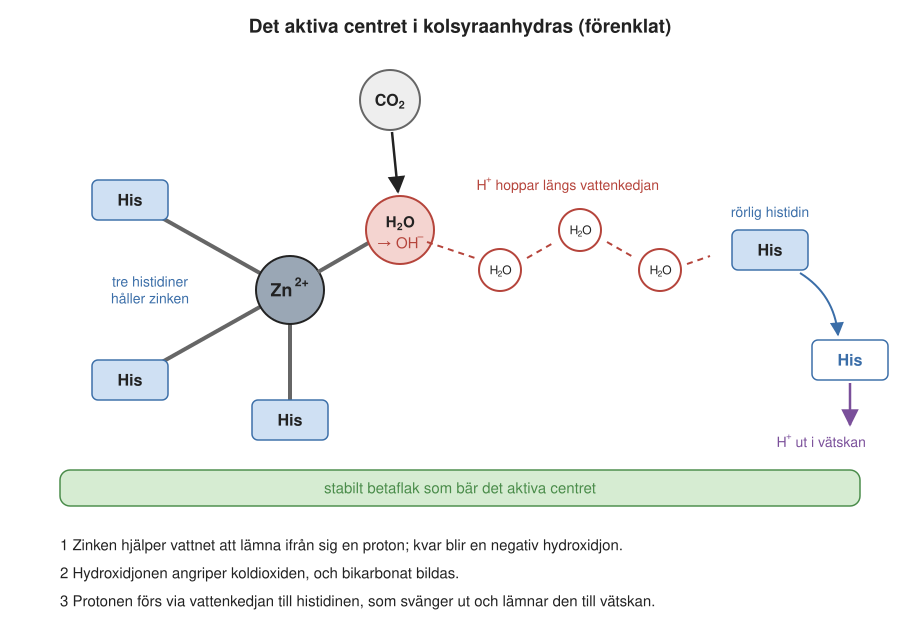
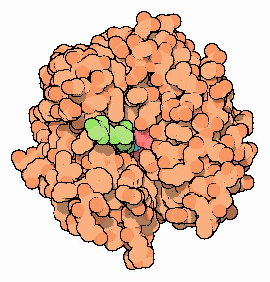
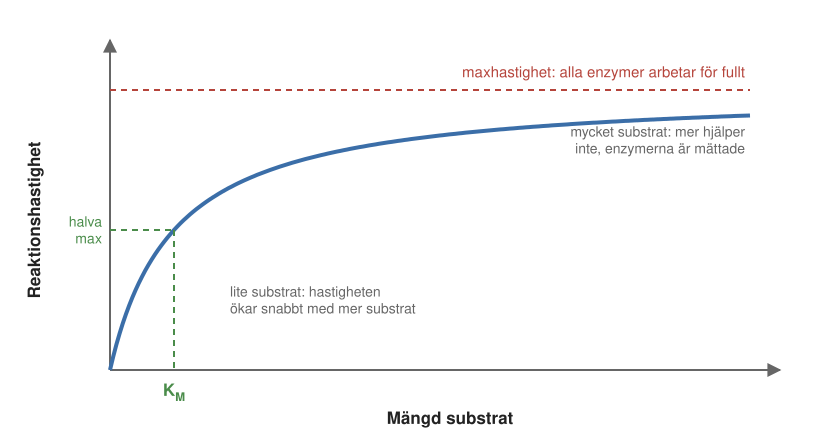

4 Enzymer – cellens katalytiska maskineri
En skål med socker kan stå på köksbordet i åratal utan att något händer. Sockret är en mycket stabil molekyl. Men om vi äter sockret bryts det inom några timmar ned till koldioxid och vatten, och energin används av kroppens celler. Kemiskt är det samma reaktion som om sockret hade brunnit, men den sker vid 37 grader, i vattenlösning och utan lågor. Det som gör skillnaden är enzymer.
I Kapitel 2 mötte vi enzymerna som cellens arbetare i ämnesomsättningen. I det här kapitlet ska vi se närmare på hur de egentligen fungerar: vad de är byggda av, hur de kan få en reaktion att gå miljontals gånger snabbare, hur man kan stoppa dem, och hur man mäter hur bra ett enzym är. I nästa kapitel (Kapitel 5) fortsätter vi med hur forskare studerar enzymer i detalj, och hur man kan försöka bygga helt nya.
4.1 Vad är ett enzym?
Ett enzym är en biologisk katalysator. En katalysator är ett ämne som gör att en kemisk reaktion går snabbare, utan att själv förbrukas. Många känner till ordet från bilens katalysator, som omvandlar giftiga avgaser till mindre farliga ämnen. Enzymerna gör samma sak i cellen, men för tusentals olika reaktioner. I princip har varje kemisk omvandling i ämnesomsättningen sitt eget enzym. Utan enzymer skulle nästan ingenting hända i en cell: den skulle inte kunna växa, inte bryta ned maten och inte anpassa sig när omgivningen förändras.
Några grundbegrepp återkommer hela kapitlet:
- Substrat är den molekyl som enzymet ska omvandla, utgångsämnet.
- Produkter är de molekyler som bildas.
- Aktivt centrum är den lilla ficka i enzymet där substratet binder och där själva reaktionen sker.
- En hämmare (eng. inhibitor) är en molekyl som binder till enzymet och hindrar det från att arbeta.
Ett enzym kan beskrivas som en liten maskin med en ficka. Substratet binder i fickan, bindningar bryts eller bildas, produkterna släpper, och enzymet är redo för nästa substratmolekyl.
Proteiner, och några RNA-molekyler
Vad är då den här maskinen gjord av? Länge var det oklart. Det var den amerikanske kemisten James Sumner som visade att enzymer är proteiner. Han lyckades 1926 rena fram enzymet ureas så noga att det bildade kristaller, och kristallerna bestod av protein. Han fick Nobelpriset i kemi 1946.
Det finns också ett fåtal katalytiska RNA-molekyler, som kallas ribozymer. Det viktigaste exemplet är ribosomen, cellens proteinfabrik (Kapitel 1). Det är RNA-delen av ribosomen, inte proteinerna, som kopplar ihop aminosyrorna. Ribosomens struktur belönades med Nobelpriset i kemi 2009 (Ada Yonath, Venki Ramakrishnan och Thomas Steitz). Många forskare tror att ribozymer var de första katalysatorerna när livet uppstod, innan det fanns proteiner. Men i dag är nästan alla enzymer proteiner.
Byggstenarna
Som alla proteiner är enzymerna kedjor av aminosyror (Kapitel 1), och det är aminosyrorna som avgör vad ett enzym kan göra. De 20 aminosyrorna kan liknas vid en konstnärs palett, eller vid legobitar av olika slag. Några är positivt eller negativt laddade, några är polära och trivs i vatten, några är opolära och undviker vatten, och några har stora platta ringar (aromatiska aminosyror). Genom att placera rätt aminosyror på rätt ställe i det aktiva centret kan enzymet skapa precis den kemiska miljö som en viss reaktion behöver.
Ibland räcker inte de 20 aminosyrorna. Många enzymer behöver då hjälp av kofaktorer, som vi mötte i Kapitel 2. Det kan vara metalljoner, som järn, zink, magnesium, koppar eller mangan. Det är en av anledningarna till att vi behöver mineraler i maten. Det kan också vara större organiska molekyler: hemgruppen, med en järnatom i mitten, som binder syre; klorofyll, som fångar in ljus i växterna; eller små kluster av järn och svavel, som leder elektroner. En kofaktor som sitter hårt eller permanent fast i enzymet kallas en prostetisk grupp.
Många kofaktorer tillverkas av vitaminer. Vitamin B12 behövs av enzymer som bygger och bryter bindningar mellan kolatomer. B12 tillverkas bara av mikroorganismer och finns naturligt nästan bara i animalisk mat, som lever. Det tillsätts därför ofta i vegansk mat, till exempel i jästextrakt och växtdrycker. Vitamin B3 (niacin) görs om till NADH, en molekyl som bär elektroner mellan enzymer i ämnesomsättningen och som vi möter igen i Kapitel 5. Ett annat exempel är C-vitamin. För att kollagenet i senor, leder och hud ska bli starkt måste aminosyran prolin i kollagenkedjan förses med en extra kemisk grupp. Enzymet som gör det behöver C-vitamin. Utan C-vitamin blir kollagenet svagt, och det är därför brist på C-vitamin ger skörbjugg.
4.2 Naturens katalysatorer är överlägsna
Människan använder också katalysatorer i stor skala, i kemisk industri. Men enzymerna skiljer sig från dem på fyra viktiga sätt.
De arbetar under milda förhållanden. De flesta enzymer fungerar bäst vid kroppstemperatur, neutralt pH och vanligt lufttryck. (pH är ett mått på hur sur en lösning är: 7 är neutralt, lägre värden är surt och högre basiskt; se Kapitel 2.) Industrin däremot behöver ofta höga temperaturer och tryck. Ett exempel är Haber–Bosch-metoden, som används för att göra ammoniak till konstgödsel av luftens kväve. Den kräver flera hundra grader och mycket högt tryck. Vissa bakterier gör samma sak med ett enzym, vid rumstemperatur.
Baksidan är att enzymerna är känsliga för sin miljö. Aktiviteten är högst vid en viss temperatur och ett visst pH, och sjunker om det blir för varmt, för kallt, för surt eller för basiskt (Figur 4.1). Våra enzymer är anpassade till 37 grader, och det är en av anledningarna till att mycket hög feber är farlig: proteinerna börjar förlora sin form. Andra enzymer är anpassade till helt andra miljöer. Matsmältningsenzymerna i magsäcken arbetar i den starkt sura magsaften, och vissa bakterier som lever i heta källor har enzymer som fungerar nära kokpunkten.

De är enormt effektiva. Enzymer kan göra en reaktion miljontals eller miljardtals gånger snabbare, ofta utan oönskade biprodukter. Två exempel:
- Kolsyraanhydras omvandlar koldioxid och vatten till bikarbonat, samma ämne som i bakpulver. Reaktionen går av sig själv, men ganska långsamt: utan enzym tar det i genomsnitt omkring tio sekunder innan en koldioxidmolekyl reagerar. I den ficka där enzymet arbetar går det ungefär tio miljoner gånger snabbare, och en enda enzymmolekyl hinner omvandla omkring en miljon molekyler per sekund. Vi återkommer till detta enzym i Avsnitt 4.6.
- Ett enzym som behövs för att tillverka byggstenar till DNA och RNA (orotidinfosfat-dekarboxylas) är ännu mer extremt. Utan enzym skulle det i genomsnitt ta 78 miljoner år innan en enskild molekyl reagerade. Med enzymet tar det 18 millisekunder. Det är en försnabbning med ungefär en faktor 1017, en etta följd av sjutton nollor.
Hur kan man veta att något tar 78 miljoner år? Man mäter på väldigt många molekyler samtidigt. Även om varje molekyl reagerar sällan, så reagerar några av dem hela tiden, och från det kan man räkna ut hur lång tid det i genomsnitt tar för en molekyl.
De förnyas hela tiden. Enzymer byggs ständigt upp av ribosomerna och bryts ned igen. Ett exempel är fotosystem II, det stora enzym i växter som använder solljus för att spjälka vatten och därvid bildar syre. Det arbetar under så hårda förhållanden att delar av det skadas hela tiden och byggs om, i starkt ljus så ofta som ungefär var tjugonde minut.
De klarar kemi som vi inte kan efterlikna. Fotosystem II är också ett exempel på det. I dess aktiva centrum sitter ett litet kluster av manganjoner och en kalciumjon, som med hjälp av ljusets energi tar fyra elektroner från två vattenmolekyler och bildar syre (hur det går till beskrivs i Avsnitt 10.3). Det är tack vare den reaktionen som jordens atmosfär innehåller syre. Kemister har lyckats bygga konstgjorda katalysatorer som kan spjälka vatten, men de kräver till exempel elektrisk ström och sällsynta metaller som rutenium, och de är inte lika effektiva. Enzymerna har förfinats under miljarder år av evolution, och vi har mycket kvar att lära av dem.
4.3 En kort historik
Människan har använt enzymer i tusentals år, långt innan någon visste vad de var. Ost tillverkades redan för mer än 7 000 år sedan, och en metod var att låta mjölk stå i magsäcken från ett djur. Där finns ett enzym, i dag kallat kymosin eller löpe, som får mjölkens protein kasein att klumpa ihop sig. Jäsning av mat och dryck är också mycket gammal. Egyptiska gravmålningar från omkring 2000 f.Kr. visar vintillverkning, och i Kina jäste man drycker ännu tidigare.
Under 1800-talet började man undra vad som egentligen händer vid jäsning. Den franske kemisten och mikrobiologen Louis Pasteur studerade på 1850-talet hur jäst omvandlar socker till alkohol och koldioxid. Han menade att det krävdes levande jästceller, med en särskild livskraft, för att omvandlingen skulle ske. Den tyske fysiologen Wilhelm Kühne myntade på 1870-talet ordet enzym, från grekiskans “i jäst”. 1897 visade den tyske kemisten Eduard Buchner att det inte behövdes några levande celler alls. Ett cellfritt extrakt av krossad jäst kunde jäsa socker lika bra. Det var alltså molekyler i jästen som gjorde arbetet, inte livet självt. Buchner fick Nobelpriset i kemi 1907.
Nästa steg var att ta reda på vad molekylerna var. Som vi redan har sett visade Sumner 1926 att enzymer är proteiner. Men hur enzymerna såg ut fick man vänta på mycket länge, eftersom de är för små för att ses i mikroskop. Den första strukturen av ett enzym, där man kunde se var varje atom satt, bestämdes 1965 av David Phillips och hans medarbetare med hjälp av röntgenkristallografi (Avsnitt 6.10.1). Enzymet var lysozym, som finns i tårar, saliv och äggvita. Lysozym bryter ned kolhydratkedjorna i bakteriers cellväggar och skyddar oss därmed mot bakterier.
4.4 Hur fungerar ett enzym?
Nu kommer vi till kapitlets huvudfråga: hur kan ett enzym få en reaktion att gå miljontals gånger snabbare, utan att själv förändras? För att svara på det behöver vi först se vad som händer i en kemisk reaktion, och vilka krafter ett enzym har att arbeta med.
Kemiska bindningar och svaga krafter
En kemisk reaktion handlar om att bryta vissa kemiska bindningar och bilda nya. En kovalent bindning uppstår när två atomer delar på elektroner: det finns en ökad chans att hitta elektronerna mellan de två atomkärnorna, och elektronerna håller ihop kärnorna som ett lim. Att det fungerar så kan inte förklaras med vardaglig fysik, utan är en effekt av kvantmekaniken. En typisk bindning är 1–2 ångström lång. En ångström, uppkallad efter den svenske fysikern Anders Ångström, är en tiomiljarddels meter (10−10 m), ungefär storleken av en atom.
Kovalenta bindningar är starka. Hur kan då ett enzym få en sådan att brytas, utan att förbruka ATP eller någon annan energikälla? Svaret är att enzymet inte behöver tillföra hela bindningens energi. I en reaktion bryts gamla bindningar samtidigt som nya bildas, och det som måste övervinnas är en energibarriär, som vi strax ska se. Enzymet sänker barriären med hjälp av många svaga växelverkningar med substratet: dragningskraft mellan positiva och negativa laddningar, vätebindningar (en svag bindning där en väteatom delas mellan två andra atomer) och ännu svagare krafter mellan atomer som ligger tätt intill varandra. Var för sig är de svaga, men i det aktiva centret finns många av dem, och tillsammans kan de dra och skjuta på substratet så att det lättare tar sig över barriären. Det påminner om magneter som drar i ett föremål från flera håll samtidigt.
Energibarriären
Vad är då den energibarriär som enzymet sänker? Även om en reaktion frigör energi, som när socker förbränns, sker den inte av sig själv i någon märkbar takt. Det beror på att molekylerna först måste ta sig över en energibarriär. Man kan tänka sig en vandrare som ska från en dal till en annan, lägre dal. Vägen går över ett bergspass, och ju högre passet är, desto färre tar sig över det på en given tid. Höjden på passet kallas reaktionens aktiveringsenergi.
Hur mycket höjden spelar roll visade den svenske kemisten Svante Arrhenius. Det var han som i slutet av 1800-talet beskrev sambandet mellan aktiveringsenergin och hur snabbt en reaktion går. Han visade att sambandet inte är proportionellt utan exponentiellt: om barriären sänks lite går reaktionen mycket snabbare. Arrhenius fick Nobelpriset i kemi 1903, dock för ett annat arbete, om hur salter delas upp i joner i vatten.
Högst uppe på passet befinner sig molekylerna i ett övergångstillstånd (eng. transition state). Där har den gamla bindningen börjat brytas men den nya har ännu inte bildats helt. Om man tänker sig spjälkningen av ATP till ADP och fosfat, är övergångstillståndet det ögonblick då fosfatgruppen är på väg att lossna men ännu sitter kvar. Övergångstillståndet är inte stabilt. Molekylerna stannar där bara under en ytterst kort stund innan de faller ned åt ena eller andra hållet.
Därför går det inte att ta en bild av ett övergångstillstånd. Ingenting håller kvar molekylen på toppen av passet. Med extremt snabba laserpulser kan man skymta hur bindningarna rör sig under bråkdelar av en miljarddels sekund, men någon struktur får man inte. I stället bestämmer forskarna strukturen av enzymet med substratet och med produkten, och räknar sedan fram med kvantmekanik hur övergångstillståndet däremellan bör se ut (Avsnitt 5.6). Det är en viktig anledning till att vi ännu inte helt förstår hur många enzymer fungerar.

Enzymet binder hårdast till övergångstillståndet
Hur sänker ett enzym barriären? Den amerikanske kemisten Linus Pauling föreslog 1946 svaret, som i dag är grunden för vår förståelse av enzymer: enzymet stabiliserar övergångstillståndet.
När substratet har bundit till enzymet bildas ett enzym–substratkomplex. Förloppet kan skrivas
enzym + substrat ⇄ enzym–substratkomplex → enzym + produkt
Det aktiva centret är format så att det passar allra bäst till övergångstillståndets form och laddningar, bättre än till substratet och bättre än till produkterna. När substratet binder och börjar omvandlas uppstår därför fler och starkare växelverkningar med enzymet, och övergångstillståndets energi sänks. Barriären blir lägre (Figur 4.2).
Här finns en balans. Om enzymet band substratet alltför hårt skulle enzym–substratkomplexet bli liggande i en djup energigrop, och det skulle bli längre upp till övergångstillståndet. Ett bra enzym ska alltså binda substratet tillräckligt för att fånga det, men binda övergångstillståndet ännu mycket starkare.
Två saker är viktiga att komma ihåg:
- Enzymet ändrar inte reaktionens slutresultat. Energiskillnaden mellan substrat och produkter är densamma med och utan enzym. En reaktion som inte kan ske av sig själv blir inte möjlig av ett enzym. Enzymet gör bara att det som ändå kan ske går mycket snabbare, åt båda hållen.
- Enzymet förbrukas inte. När produkterna har släppt är enzymet oförändrat och kan ta emot nästa substratmolekyl, i en katalytisk cykel som upprepas om och om igen (Figur 4.3).

Pauling hade en ovanlig bakgrund för en kemist: han hämtade många av sina verktyg från fysiken. Han hade på 1920-talet rest till Europa för att lära sig den nya kvantmekaniken av fysiker som Erwin Schrödinger, och han använde den för att förklara den kemiska bindningen. Han är en av få personer som fått två Nobelpris, båda odelade: i kemi 1954, för sitt arbete om den kemiska bindningens natur, och Nobels fredspris 1962, för sitt arbete mot kärnvapenprov.
Lås och nyckel, eller hand och handske
Långt innan någon hade sett ett enzym föreslog den tyske kemisten Emil Fischer 1894 en bild som fortfarande används. Han skrev att enzymet och dess substrat måste passa ihop “som lås och nyckel” för att kunna påverka varandra kemiskt. Det är en bra bild av att enzymer är specifika: varje enzym tar bara emot ett visst substrat, eller några få närbesläktade.
Bilden stämmer för vissa enzymer, men inte för alla. Den amerikanske biokemisten Daniel Koshland föreslog 1958 att enzymet ofta ändrar form när substratet binder, som en handske som formar sig efter handen. Det kallas inducerad passform (eng. induced fit). Ett känt exempel är hexokinas, det första enzymet i nedbrytningen av socker. Enzymet ser ut som en klämma med en öppen klyfta. När en sockermolekyl binder i klyftan sluter sig enzymet runt den (Figur 4.4). Därmed stängs vattnet ute, så att reaktionen kan ske utan störning.

Hur noga enzymerna skiljer mellan olika molekyler syns i ett exempel från Ville Kailas egen forskning. Ett enzym från mögelsvampen Aspergillus nidulans tillverkar ämnen som kallas kinolonalkaloider, som är intressanta som möjliga läkemedel mot cancer. Kemister kan bygga dem i laboratoriet, men det kräver ett mycket stort antal steg. Svampen klarar det med hjälp av enzymer. När forskarna bytte ut en liten metylgrupp (en kolatom med tre väten) på substratet mot en enda väteatom slutade enzymet nästan helt att fungera. Strukturen visade varför: den lilla gruppen var precis det som behövdes för att substratet skulle binda med tillräckligt många kontakter.
Samma noggrannhet märks i vardagen. Många vuxna i världen tål inte mjölksocker, laktos, eftersom de som vuxna inte längre tillverkar laktas, det enzym som bryter ned just det sockret. Tarmens andra sockerspjälkande enzymer kan inte ta över, trots att laktos bara skiljer sig lite från de sockerarter de bryter ned.
4.5 Hämmare: att stoppa ett enzym
Ibland vill man stoppa ett enzym. Det kan vara ett enzym som en sjukdomsframkallande bakterie eller ett virus behöver, eller ett enzym som låter cancerceller dela sig. Då kan man använda en hämmare. En bra hämmare är ofta en molekyl som liknar substratet eller övergångstillståndet, så att den binder i det aktiva centret, men som inte kan reagera. Den sitter då kvar och blockerar enzymet. Molekyler som liknar övergångstillståndet är särskilt effektiva, eftersom enzymet binder övergångstillståndet allra hårdast.
Man skiljer på två huvudtyper (Figur 4.5):
- Vid kompetitiv hämning tävlar hämmaren och substratet om samma plats i det aktiva centret. Ju mer hämmare, desto färre enzymmolekyler är lediga för substratet.
- Vid icke-kompetitiv hämning binder hämmaren någon annanstans på enzymet. Den ändrar då enzymets form så att det aktiva centret inte längre fungerar. Detta är ett slags allosterisk påverkan, av grekiskans allos, annan, samma princip som vid återkopplingen i Kapitel 2.

Gifter
Många gifter är enzymhämmare. Cyanid är ett välkänt exempel. Det slår ut det sista enzymet i andningskedjan, cytokrom c-oxidas (komplex IV), som tar hand om nästan allt det syre som kroppen förbrukar och gör det till vatten (vi återkommer till enzymet i Kapitel 9 och Avsnitt 10.1). Syret binder till en järnatom i en hemgrupp i enzymets aktiva centrum. Cyanidjonen, som består av en kolatom och en kväveatom, är ungefär lika stor som en syremolekyl och binder på samma plats, och mycket hårt. Då stannar andningskedjan, och cellerna kan inte längre utnyttja syret. Det är därför cyanid är så giftigt. Kolmonoxid binder på liknande sätt till järnet, men är farligt framför allt för att det tränger undan syret i blodets hemoglobin. Andra exempel är vissa nervgaser och extremt giftiga ämnen som binder till viktiga enzymer och slår ut dem helt.
Hämmare är också ett verktyg i forskningen, eftersom de kan visa hur ett enzym binder sitt substrat. I ett samarbete där Ville Kailas grupp deltog bestämde man strukturen av komplex I, det första enzymet i andningskedjan (Kapitel 5), med en hämmare bunden som liknar enzymets naturliga substrat, ubikinon (koenzym Q10). Hämmaren binder nästan på samma sätt, men saknar den kemiska grupp som behövs för reaktionen, och därför fastnar den och blockerar enzymet.
Läkemedel
En stor del av alla läkemedel är enzymhämmare. Ett exempel är läkemedlen mot hiv. Viruset behöver ett enzym, HIV-proteas, som klipper sönder långa proteinkedjor till de mindre proteiner som nya viruspartiklar byggs av. Läkemedel som ritonavir är molekyler som byggts för att passa precis i proteasets aktiva centrum och blockera det (Figur 4.6). Utan ett fungerande proteas kan viruset inte bilda nya smittsamma partiklar.

För att kunna konstruera sådana läkemedel måste man veta hur enzymet ser ut och hur det fungerar. Det är en viktig anledning till att grundforskning om enzymer har så stor praktisk betydelse.
4.6 Ett enzym i detalj: kolsyraanhydras
Det mesta i kapitlet hittills går att se i ett enda enzym. Därför ska vi nu följa ett enzym i detalj: vad det gör i kroppen, hur dess aktiva centrum är byggt och hur snabbt det arbetar. Kolsyraanhydras (eng. carbonic anhydrase) skyndar på en till synes enkel reaktion: koldioxid reagerar med vatten och bildar bikarbonat och en vätejon. Reaktionen sker även utan enzym. Det är samma reaktion som sker i en läskflaska: koldioxid löser sig i vattnet och bildar kolsyra, som delvis blir bikarbonat. Och det är den som går baklänges och får bubblorna att forsa upp när man skakar flaskan och öppnar den. Men utan enzym går den för långsamt för kroppens behov.
Varför reaktionen är viktig
När cellerna förbränner socker och fett bildas koldioxid, som måste transporteras till lungorna. Koldioxiden går från vävnaderna in i de röda blodkropparna. Där finns kolsyraanhydras, som snabbt gör om koldioxiden till bikarbonat, som löser sig i blodet. Det bildas inga gasbubblor, vilket skulle vara farligt. Bikarbonatjonerna förs ut i blodplasman i utbyte mot kloridjoner och transporteras till lungorna (Figur 4.7).
Samtidigt bildas vätejoner, som gör blodet i de röda blodkropparna lite surare. Det får hemoglobinet att släppa sitt syre, som då kan gå ut till vävnaden. Det är en elegant koppling: just där det bildas mycket koldioxid, alltså där cellerna förbränner mycket, lämnar hemoglobinet ifrån sig mest syre.
I lungorna går allt baklänges. Bikarbonatet förenas med vätejoner och blir koldioxid igen, som vi andas ut, och hemoglobinet tar upp nytt syre. Samma enzym skyndar på reaktionen åt båda hållen, precis som vi såg att ett enzym ska göra.

Balansen är känslig. Om man hyperventilerar andas man ut för mycket koldioxid, och blodets surhet rubbas. Det är därför man förr ofta fick rådet att andas i en papperspåse. I dag rekommenderas i stället lugn, långsam andning.
Vi bygger ett enzym på papper
Hur skulle man själv konstruera ett enzym för den här reaktionen? Det är ett bra sätt att förstå hur enzymer fungerar. Reaktionen sker i tre steg:
- En vattenmolekyl måste lämna ifrån sig en vätejon (en proton). Kvar blir en hydroxidjon, en syreatom med en väteatom, som är negativt laddad.
- Hydroxidjonen angriper koldioxidmolekylen, och en ny bindning bildas mellan syret och kolet. Då har bikarbonat bildats.
- Protonen måste föras bort, ut i den omgivande vätskan.
Vad behöver vårt enzym då?
- Något som tar emot protonen. Aminosyran histidin passar bra. Den kan lätt både ta upp och lämna ifrån sig en proton vid neutralt pH. Histidinen bör sitta på en rörlig del av enzymet, så att den kan svänga ut och lämna protonen till vätskan utanför.
- En väg för protonen. Vatten är bra på att leda protoner. En kedja av vattenmolekyler mellan reaktionsplatsen och histidinen kan föra protonen vidare, ungefär som en hink som skickas längs en rad av människor.
- Något som stabiliserar den negativa hydroxidjonen. Det måste vara något positivt. En metalljon med två positiva laddningar är ett bra val, till exempel zink.
- Något som håller zinken på plats. Histidin är bra på att binda metaller, så tre histidiner kan hålla zinkjonen.
- En omgivning som håller allt i ordning. Polära aminosyror kan hålla vattenkedjan på plats med vätebindningar. Opolära aminosyror kan skapa en vattenfri miljö på andra sidan, där de elektriska krafterna blir starkare. Ett stabilt betaflak kan bära alltihop.
Hur har naturen gjort? Om man tittar i den experimentellt bestämda strukturen av kolsyraanhydras hittar man nästan exakt detta. Det finns en zinkjon, bunden av tre histidiner, med en vattenmolekyl eller hydroxidjon fäst vid sig. Det finns en kedja av vattenmolekyler fram till en fjärde histidin, som i strukturen syns i två lägen: ett inåt och ett utåt. Runt omkring finns polära och opolära aminosyror, och alltihop vilar på ett betaflak (Figur 4.8).
Att vår ritning och naturens lösning stämmer så väl är ingen slump. Evolutionen har provat sig fram under väldigt lång tid. De organismer som hade ett fungerande enzym överlevde, och därför kan vi i dag förstå varför varje del sitter där den sitter.


Med datorberäkningar, som vi beskriver i Kapitel 5, kan man följa hur reaktionen går till steg för steg: hur protonen hoppar längs vattenkedjan till histidinen, hur hydroxidjonen och koldioxiden bildar en bindning, och hur bikarbonatet till sist lossnar. Varje steg har sitt eget övergångstillstånd.
Ett experiment i köket, nästan
Hur snabbt enzymet är kan man se med ett enkelt försök. Man tar två glas med samma vattenlösning, som innehåller en pH-indikator, ett färgämne som byter färg när lösningen blir sur. En vanlig indikator, tymolblått, är blågrön i den svagt basiska lösningen och slår om till gult eller orange när den blir sur. I det ena glaset tillsätter man lite kolsyraanhydras. Sedan häller man i vatten mättat med koldioxid i båda.
I glaset med enzym slår färgen om nästan omedelbart. Det beror på att vätejonerna bildas så fort. I glaset utan enzym ändras färgen också, men långsamt. Båda glasen hamnar till sist i samma läge, eftersom enzymet inte ändrar slutresultatet, bara hur snabbt man kommer dit.
4.7 Hur bra är ett enzym? Enzymkinetik
Att se att ett glas byter färg snabbare än ett annat är en början. Men naturvetenskap vill mäta. Läran om hur snabbt reaktioner går kallas kinetik, och enzymkinetik handlar om att beskriva ett enzyms förmåga med några få tal. Färgförändringen i försöket ovan kan till exempel mätas med ett instrument som registrerar hur mycket ljus av en viss färg lösningen släpper igenom, och hur det ändras med tiden (Kapitel 5).
Från få kunder till fullt hus
Det första man vill veta är hur reaktionen går snabbare när det finns mer substrat, och var det tar stopp. En vardaglig bild gör det lättare att förstå.
Tänk dig en mataffär med tio kassor och lika många kassörer. När det bara finns ett par kunder i butiken står de flesta kassörerna sysslolösa, och det är kunderna som är begränsningen. Kommer det fler kunder hinner fler kassor arbeta, och fler kunder per minut passerar ut. Men när det står kö vid alla kassor går det inte fortare hur många kunder som än kommer in. Då är det kassörernas arbetstakt som sätter gränsen.
Ett enzym i en lösning beter sig på samma sätt. Enzymmolekylerna är kassorna och substratmolekylerna kunderna. Med lite substrat tar det tid för substratet att hitta fram till ett enzym, och de flesta enzymer står sysslolösa. Om man ökar mängden substrat ökar reaktionshastigheten. Men till slut är alla enzymers aktiva centra upptagna hela tiden, och då hjälper det inte med mer substrat. Enzymet är mättat (Figur 4.10).

Två tal som beskriver ett enzym
Ur kurvan kan man läsa av två tal som biokemister alltid vill veta om ett enzym:
- Maxhastigheten visar hur snabbt enzymet arbetar när det har allt substrat det kan önska. Räknat per enzymmolekyl kallas den kcat (uttalas “k-katt”, av katalys), och anger hur många substratmolekyler varje enzymmolekyl hinner omvandla per sekund. Det är kassörens arbetstakt. För kolsyraanhydras är det ungefär en miljon per sekund.
- KM, Michaelis-konstanten, är den mängd substrat som behövs för att enzymet ska arbeta med halva sin maxhastighet. Den säger något om hur lätt enzymet fångar sitt substrat. Ett enzym med lågt KM blir halvmättat redan vid låga substratmängder; det griper substratet effektivt. Ett enzym med högt KM behöver mycket substrat.
Talen kan också kopplas till energidiagrammet (Figur 4.2). KM svarar ungefär mot hur djup gropen för enzym–substratkomplexet är, och kcat mot hur högt det är därifrån upp till övergångstillståndet. Det är de två som tillsammans avgör hur bra ett enzym är.
Sambandet beskrevs matematiskt 1913 av den tyske biokemisten Leonor Michaelis och den kanadensiska läkaren och biokemisten Maud Menten, och kallas därför Michaelis–Mentens ekvation. Konstanten fick bara hans namn, men ekvationen bär bådas.
Det perfekta enzymet
Hur effektivt ett enzym är när det är ont om substrat, vilket ofta är fallet i cellen, beror på två saker: hur snabbt det arbetar (kcat) och hur lätt det fångar substratet (KM). Förhållandet kcat/KM kallas därför enzymets effektivitet (eller specificitetskonstant).
Det finns en övre gräns för hur effektivt ett enzym kan bli. Ett enzym kan aldrig arbeta snabbare än substratmolekylerna hinner ta sig fram till det. Molekyler i en lösning rör sig genom slumpmässig diffusion, och hur snabbt det går beror bland annat på molekylernas storlek. Ett enzym vars effektivitet når upp till den gräns som diffusionen sätter kallas kinetiskt perfekt: det omvandlar i stort sett varje substratmolekyl som råkar stöta in i dess aktiva centrum. Kolsyraanhydras ligger mycket nära den gränsen.
Det överraskande är att kolsyraanhydras binder koldioxid ganska svagt: det har ett högt KM, och det behövs relativt mycket koldioxid för att enzymet ska arbeta med halva farten. Men varje gång det väl har fångat en molekyl går omvandlingen så snabbt att kvoten kcat/KM ändå hamnar nära diffusionsgränsen. Ett bra enzym behöver alltså inte hålla hårt i sitt substrat, bara släppa igenom det snabbt.
Kolsyraanhydras kan inte bli mycket bättre, och det behöver det inte heller. Det säger något om hur viktigt det är för kroppen att koldioxiden tas om hand snabbt.
Ett recept för ett bättre enzym
Nu kan vi knyta ihop energidiagrammet och kinetiken till ett recept för hur ett bra enzym ska se ut. Det ska sänka barriären så mycket som möjligt genom att binda övergångstillståndet mycket starkt, så att kcat blir högt. Men det ska inte binda substratet så starkt att enzym–substratkomplexet fastnar i en djup grop. Målet är att kcat/KM blir så högt som möjligt.
Receptet är användbart när man vill förbättra ett enzym. Om man vill ha ett enzym för en reaktion som inte finns i naturen, till exempel ett som bryter ned plast eller olja, kan man börja med ett enzym som utför reaktionen dåligt, och sedan försöka förbättra det. Antingen byter man ut utvalda aminosyror enligt en idé om hur enzymet fungerar, eller så låter man slumpen och urvalet göra jobbet, som i evolutionen. Hur det går till, och hur forskare tar reda på hur enzymer fungerar i detalj, är ämnet för nästa kapitel (Kapitel 5).
4.8 Sammanfattning
- Enzymer är biologiska katalysatorer, nästan alltid proteiner. De gör kemiska reaktioner miljontals gånger snabbare, under milda förhållanden och utan att förbrukas.
- Ett enzym binder sitt substrat i ett aktivt centrum och omvandlar det till produkter. Många enzymer behöver kofaktorer, som metalljoner eller molekyler tillverkade av vitaminer.
- En reaktion måste ta sig över en energibarriär. Enzymet sänker barriären genom att binda övergångstillståndet starkare än substratet, med hjälp av många svaga växelverkningar. Enzymet ändrar inte reaktionens slutresultat.
- Enzymer är specifika: substratet passar som en nyckel i ett lås, och ibland formar enzymet sig efter substratet (inducerad passform).
- Hämmare binder till enzymet och blockerar det, antingen i det aktiva centret (kompetitiv hämning) eller på ett annat ställe (icke-kompetitiv hämning). Många läkemedel och gifter är hämmare.
- Kolsyraanhydras gör om koldioxid till bikarbonat i blodet med hjälp av en zinkjon, histidiner och en kedja av vattenmolekyler, ungefär en miljon gånger per sekund.
- Ett enzyms förmåga beskrivs med kcat, hur snabbt det arbetar när det är mättat, och KM, hur mycket substrat som behövs för halva maxhastigheten. Kvoten kcat/KM mäter effektiviteten, och ett enzym som når diffusionsgränsen kallas kinetiskt perfekt.
4.9 Nyckelbegrepp
- enzym – En biologisk katalysator, nästan alltid ett protein, som gör en viss kemisk reaktion mycket snabbare utan att själv förbrukas.
- katalysator – Ett ämne som gör en kemisk reaktion snabbare utan att förbrukas. Enzymer är cellens katalysatorer.
- substrat – Den molekyl som ett enzym binder och omvandlar.
- produkt – En molekyl som bildas i en kemisk reaktion, till exempel när ett enzym har omvandlat sitt substrat.
- aktivt centrum – Den ficka i ett enzym där substratet binder och där reaktionen sker.
- ribozym – En RNA-molekyl som fungerar som katalysator. Ribosomens RNA är det viktigaste exemplet.
- prostetisk grupp – En kofaktor som sitter hårt eller permanent fast i ett enzym, till exempel hemgruppen.
- enzym–substratkomplex – Enzymet med substratet bundet i det aktiva centret, det första steget i en enzymreaktion: enzym + substrat ⇄ enzym–substratkomplex → enzym + produkt.
- aktiveringsenergi – Den energibarriär som molekylerna måste ta sig över för att en reaktion ska ske. Ju högre barriär, desto långsammare reaktion.
- övergångstillstånd – Det instabila läget högst upp på energibarriären, där gamla bindningar håller på att brytas och nya att bildas (eng. transition state). Enzymer binder det särskilt starkt.
- ångström – En längdenhet, en tiomiljarddels meter (0,1 nanometer). Ungefär storleken av en atom.
- inducerad passform – Att ett enzym ändrar form när substratet binder och sluter sig runt det, som en handske runt en hand (eng. induced fit).
- specificitet – Ett enzyms förmåga att bara binda och omvandla ett visst substrat, eller några få närbesläktade.
- hämmare – En molekyl som binder till ett enzym och hindrar det från att arbeta (eng. inhibitor). Många läkemedel och gifter är hämmare.
- kompetitiv hämning – Hämning där hämmaren binder i det aktiva centret och tävlar med substratet om platsen.
- icke-kompetitiv hämning – Hämning där hämmaren binder på ett annat ställe än det aktiva centret och ändrar enzymets form så att det inte fungerar.
- kolsyraanhydras – Ett zinkinnehållande enzym som omvandlar koldioxid och vatten till bikarbonat och vätejoner, och tillbaka. Viktigt för transporten av koldioxid i blodet.
- pH-indikator – Ett färgämne som byter färg beroende på hur sur eller basisk en lösning är.
- enzymkinetik – Läran om hur snabbt enzymer arbetar och hur hastigheten beror på till exempel mängden substrat.
- mättnad – När det finns så mycket substrat att alla enzymers aktiva centra är upptagna hela tiden. Då ökar inte hastigheten med mer substrat.
- kcat – Hur många substratmolekyler en enzymmolekyl hinner omvandla per sekund när den är mättad med substrat (uttalas k-katt).
- KM (Michaelis-konstanten) – Den mängd substrat som ger halva maxhastigheten. Ett lågt värde betyder att enzymet fångar sitt substrat effektivt.
- Michaelis–Mentens ekvation – Ett matematiskt samband från 1913 som beskriver hur ett enzyms reaktionshastighet beror på mängden substrat.
- diffusion – Molekylers slumpvisa rörelse i en lösning, som drivs av värme. Små molekyler diffunderar snabbare än stora. Sätter en övre gräns för hur snabbt ett enzym kan arbeta.
- kinetiskt perfekt enzym – Ett enzym som är så effektivt att det i stort sett omvandlar varje substratmolekyl som når det. Hastigheten begränsas då bara av hur snabbt molekylerna rör sig i lösningen.
4.10 Testa dig själv
Flervalsfrågor
Välj ett svar och tryck på Rätta. Svarsalternativen visas i ny ordning varje gång.
Fundera vidare
4.1 Förklara med egna ord, gärna med en liknelse, varför en reaktion som frigör energi ändå kan gå mycket långsamt, och hur ett enzym kan ändra det.
4.2 Läkemedel mot hiv blockerar ett enzym som viruset behöver. Förklara hur en sådan hämmare fungerar, och varför det är viktigt att känna till enzymets struktur när man utvecklar den.
4.3 Beskriv vad som behövs i ett enzym för att det ska kunna omvandla koldioxid till bikarbonat, och hur kolsyraanhydras löser varje uppgift.
4.4 Förklara vad kcat och KM säger om ett enzym, med hjälp av liknelsen med kassorna i en mataffär.
Hjälp oss att förbättra kapitlet
Hittade du ett fel, eller något som var svårt att förstå? Skicka ett förslag i förslagsformuläret (kräver inloggning med SU-konto). Lärarna läser alla förslag inför nästa version av boken.
4.11 Läs mer
- Enzym på svenska Wikipedia, en bra översikt med historik och fler exempel.
- Carbonic Anhydrase, Molecule of the Month på PDB-101 (på engelska), om kolsyraanhydras i blod, växter och koraller.
- Michaelis–Menten kinetics på engelska Wikipedia, för den som vill se mer av matematiken bakom enzymkinetiken.
- Nobelpriset i kemi 1946 till James Sumner med flera, för upptäckten att enzymer kan kristalliseras och är proteiner (på engelska).
- Nobelpriset i kemi 1907 till Eduard Buchner, för upptäckten av cellfri jäsning (på engelska).